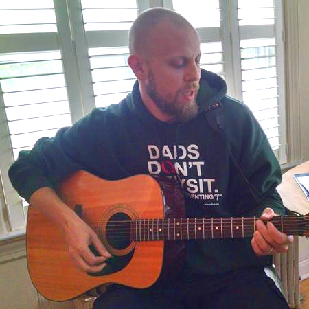

About Me
 I was born in 1980 in Lancaster, PA and am the oldest of three children. I grew up playing in the schoolyard and riding my bike around the block with the kids from the neighborhood. I split my time between two different elementary schools, and attended junior high right down the street. High school was across town and then college was in Allentown.
In 2005, I married my sweetheart, and we moved into my house in Philadelphia. From there we moved into a house in Swarthmore and eventually purchased our current residence in Secane. Our first child was welcomed into the world in 2009, and our second in 2014. At the current time, we do not have any pets in the house, having recently said goodbye to our cat of 15 years, Misha.
Once I was finished college, even though I never graduated, I moved back home and began working, eventually moving to Philadelphia for work. I moved around in jobs, never settling into a job that I really enjoyed. Eventually, I moved out of the workforce and settled into a role as a stay-at-home Dad tending to my two sons doing school things, cooking, and helping some friends and neighbors with school aftercare as well.
I have always been a musician, and took lessons through highschool on a number of different instruments. I started on piano; transitioned to clarinet when school lessons started in 4th grade. In 7th grade, at the beginning of junionr high, I joined the jazz band and added tenor saxophone to my list of instruments. In High school, I moved away from standard clarinet to bass clarinet, and eventually other low clarinets, becoming a bit of a specialist in those larger instruments. I did achieve District and Regional band in my senior year, auditioning on Contra-bass clarinet. As well as playing the low clarinets, I picked up the guitar during my senior year as well, getting a few basics from my dad and teaching the rest of it to myself. I still play the guitar quite often, playing weekly for the family service at our church as well as multiple times during the week.